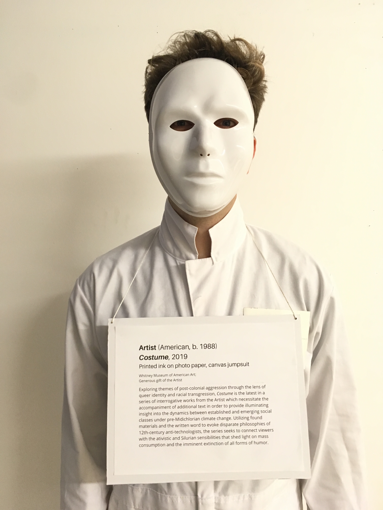
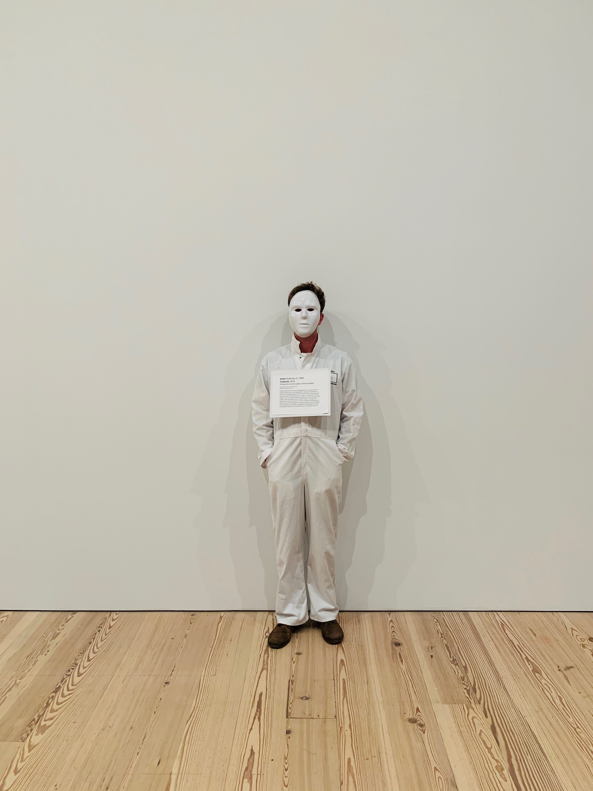

Thanks for putting out the Content/Copywriter call to join your team. I'm very excited to put my hat in the ring for this role.
I also wanted to thank you for having me at your Halloween Party a few weeks ago. I had a wonderful time.
Perhaps you saw me there. This was my costume:
At one point, I stood against a wall of the Rachel Harrison exhibit.
After a moment, the other visitors became quite interactive.
Here's what they were reading:

It was terrific.
I love using creativity to engage an audience. I wanted to share the above in particular because it called upon a number of skills I'd be thrilled to bring to the work this role will require.
One of those skills is speaking in another's voice. As a copywriter, it's been a privilege to help my clients communicate new ideas while maintaining a consistency their audiences have come to trust. I've even had the opportunity to help organizations find their voice from the very start – first crafting a tone and personality together, and then teaching them how to continue sharing it with the world. From website copy to social campaigns and institutional messaging, I know how essential it is for The Whitney to stay true to its established brand, and I'll be glad to keep all missives on the mark.
Another key part of my creative approach is the careful consideration of context. Before putting pen to paper for content creation of any form, I strive to establish a 360º awareness of the space that content will soon inhabit. Whether I'm producing internal podcasts or writing weekly email campaigns, I always train a strategic eye on the environment of each piece, ensuring its delivery is as effective as possible. I'd love to bring that mindful approach to helping devise future interactions between The Whitney and its audiences.
In both my professional endeavors and creative outputs, there's another crucial component at play: collaborating with others to produce the best work. This has been especially true in my work with enterprises like your own, where multiple stakeholders come together to ensure every effort aligns with a broader strategy. I take pride in my ability to partner with several teams at once, taking the time to understand their objectives before bringing them to life together. I'd be eager to now liaise with The Whitney's distinct departments to create more holisitc connections with your visitors.
One last thing I've learned throughout my creative tenure: there's often an inverse relationship between length of content and its effectiveness. On that note, I know I'd better save further talk of my experience for when we meet in person, where I look forward to learning more about the role and how I can best lend a hand.
Thank you again for your consideration, and I hope to hear from you soon.
Sincerely,
Max Cooper